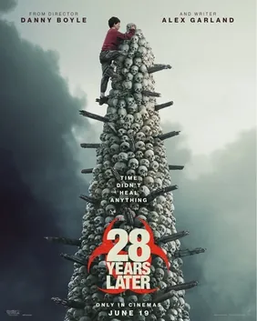

The genetics
The genetic element lies in the backstory. The Rage Virus, which in the series came from a laboratory, has devastated Britain and left it under international quarantine for 28 years. In this film it also appears to have changed: the Alphas are described as evolved or mutated Infected, stronger and more intelligent than the rest, and an infected mother gives birth to a healthy baby, raising questions about how the infection works. No scientist works on the virus; the only doctor, Ian Kelson, treats the living and honours the dead, and the film is more interested in grief, community and Britain's isolation than in science. The virus is fictional; no real pathogen produces instant, permanent rage.
How genetics is portrayed
- Overall portrayal of genetics
- negative Genetics appears only as the long aftermath of a man-made virus: a ruined, quarantined country; no practitioner offers a counterweight.
- Outcome of the genetic intervention
- negative The laboratory-born Rage Virus of the series' backstory has emptied Britain, and its Infected, including the mutated Alphas, kill people throughout the film.
The story
In 2002, as the Rage Virus spreads, a boy named Jimmy escapes the Infected after his father, a minister, gives him a crucifix and gives himself up. Twenty-eight years later the virus has been eradicated from continental Europe, but Britain remains under quarantine. On the tidal island of Lindisfarne a community survives; there Jamie takes his twelve-year-old son Spike to the mainland for his first kill, and they are chased by an Alpha, a stronger, more intelligent Infected. Learning that his father lied about his feats and that his mother Isla's illness goes untreated, Spike takes her to the mainland in search of Dr. Ian Kelson, a former GP in exile. On the way they help a pregnant Infected woman give birth to an uninfected baby. Kelson, who has built a temple of bones to the dead, diagnoses Isla with terminal cancer and, at her wish, ends her life. Spike leaves the baby at the village and returns to the mainland, where Jimmy, now leading a violent cult, rescues him.